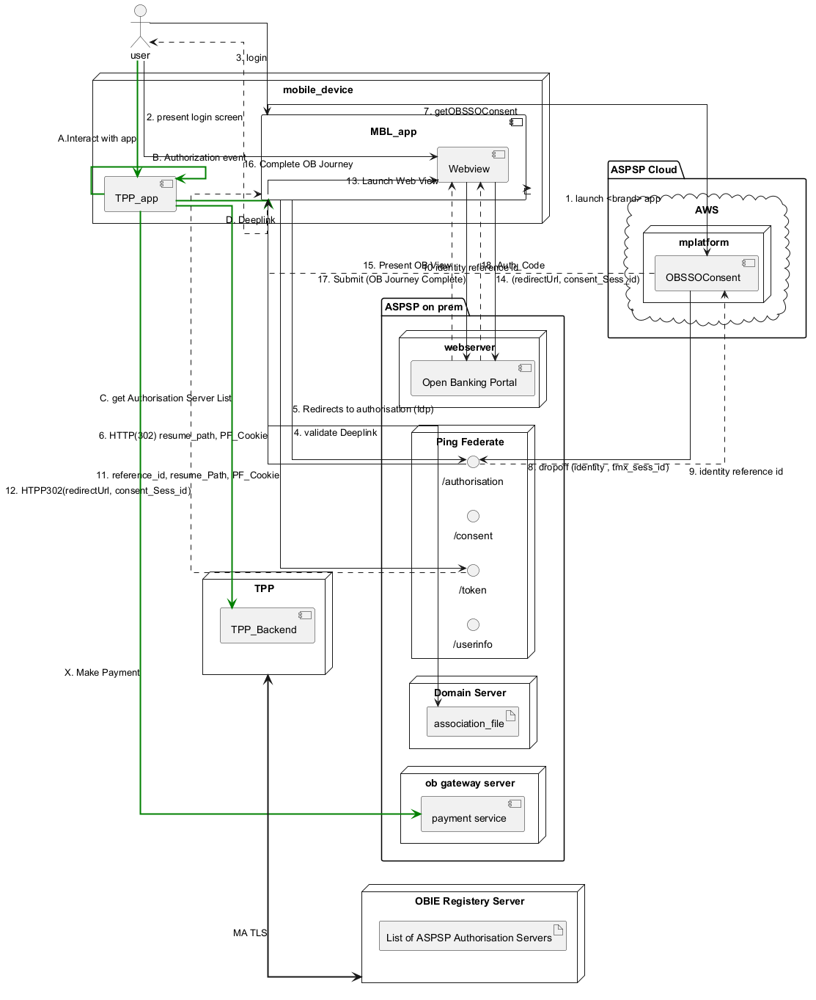

@startuml
' -----------------------------------------------------
skinparam defaultTextAlignment right
skinparam linetype ortho
' -----------------------------------------------------
'top to bottom direction
left to right direction
package "ASPSP Cloud" {
cloud AWS {
node mplatform {
[OBSSOConsent] as obc
}
}
}
package "ASPSP on prem" {
node webserver {
[Open Banking Portal] as obp
}
node "Domain Server" {
artifact association_file as asf
}
node "Ping Federate" {
interface "/authorisation" as aep
interface "/consent" as cep
interface "/token" as tep
interface "/userinfo" as uep
}
node "ob gateway server" {
[payment service] as obps
}
}
together {
node mobile_device {
component TPP_app as tapp
component MBL_app as mapp {
component Webview as mwv
}
}
actor user
}
node "OBIE Registery Server" as obie_node {
artifact "List of ASPSP Authorisation Servers" as obie_list
}
node TPP as tpp_node {
[TPP_Backend] as tppbe
}
user =[#green]=> tapp : \rA.Interact with app
tapp ==[#green]=> tapp : \rB. Authorization event
tapp =[#green]=> tppbe : \rC. get Authorisation Server List
tapp =[#green]=> mapp : \rD. Deeplink
mapp --> mapp : 1. launch <brand> app
mapp ..> user : 2. present login screen
user --> mapp : 3. login
mapp --> asf : 4. validate Deeplink
mapp --> aep : 5. Redirects to authorisation (Idp)
aep --> mapp : 6. HTTP(302) resume_path, PF_Cookie
mapp ---> obc : 7. getOBSSOConsent
obc--> aep : 8. dropoff (identity , tmx_sess_id)
aep ..> obc : 9. identity reference id
obc ..> mapp : 10 identity reference id
mapp --> tep : 11. reference_id, resume_Path, PF_Cookie
tep ..> mapp : 12. HTPP302(redirectUrl, consent_Sess_id)
mapp --> mwv : 13. Launch Web View
mwv --> obp : 14. (redirectUrl, consent_Sess_id)
obp ..> mwv : 15. Present OB View
user --> mwv : 16. Complete OB Journey
mwv --> obp : 17. Submit (OB Journey Complete)
obp ..> mwv : 18. Auth_Code
tapp =[#green]=> obps : \rX. Make Payment
tpp_node <==> obie_node : MA TLS
@enduml